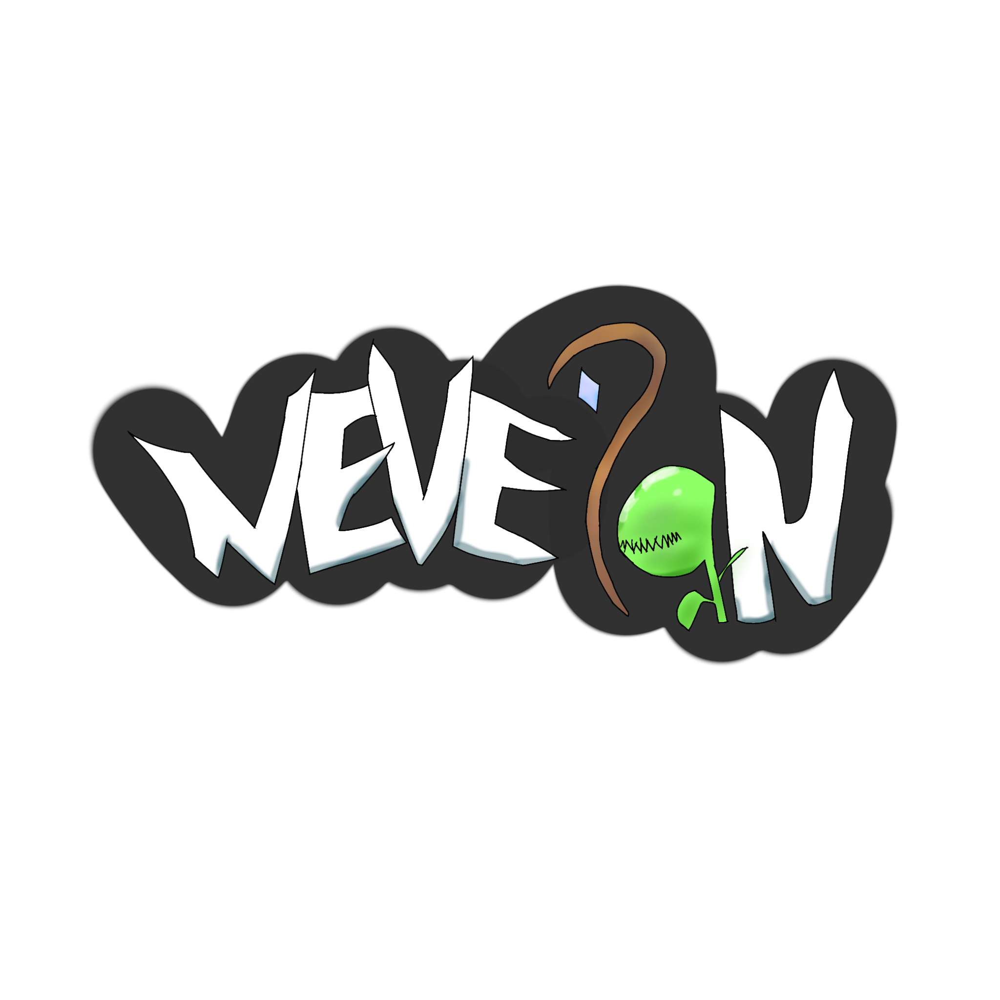

Cara Masuk Server
Tutorial Video tiktok

Selamat datang di website resmi Nevelan Fantasy. server Minecraft dengan modpack seru yang berisi petualangan!
1. Install forge 1.20.1 modloader terbaru
2. Pasang mod Auto Modpack 5.0.0 RC-2
3. Start Minecraft
4. Masuk kan IP nevelan.asia pada server address
5. Saat muncul tombol klik aja skip
6. Ketik "I accept the risk" tunggu 3 detik lalu skip lagi
7. Klik allow
8. Klik Keep Existing mod di tombol sisi kiri
9. Lalu klik download
10. Setelah selesai download, klik tombol "Yes, close the game"
11. Lalu jalankan Minecraft kalian lagi dan masuk ke server Nevelan
Tutorial Video tiktok